BeanPostProcessor类族
BeanPostProcessor是Spring中的核心钩子方法，它的许多子类分别提供了不同时间不同形式的回调，总计10个扩展点。
本文只作简单的介绍，着重在相关钩子方法的调用时机。
[TOC]
BeanPostProcessor
BeanPostProcessor 类族中最基础的扩展类，提供了初始化前后的钩子方法。
这里的初始化是指在 Bean 的创建过程中的初始化，在调用 InitMethod 方法前后。
以下是 BeanPostProcessor 的方法列表：
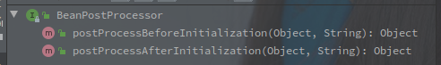
postProcessBeforeInitialization 是在初始化前调用
postProcessAfterInitialization 是初始化之后调用
两个方法都提供了完整的 Bean 对象以及 beanName 可供修改。
调用场景
下图是 doCreateBean -> initializeBean 方法片段：
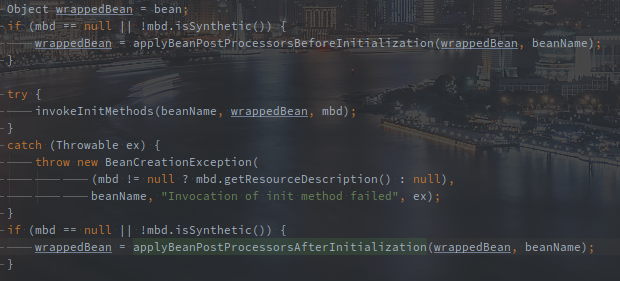
如图所示，在调用 init-method 方法的前后分别会调用 before 和 after 两个钩子方法。
除此之外 postProcessAfterInitialization 方法还会在完成自定义实例化之后调用。
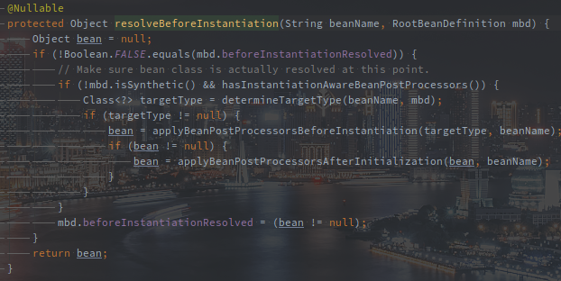
上图的片段在 createBean 方法的中间部分，再通过 InstantiationAwareBeanPostProcessor#postProcessBeforeInstantiation 创建 Bean 之后，也会遍历调用 postProcessAfterInitialization 方法。
InstantiationAwareBeanPostProcessor
该类是在 Bean 实例化前后调用的钩子方法。
该接口在继承BeanPostProcessor的基础上扩展了在实例化前后的钩子方法。
以下是 InstantiationAwareBeanPostProcessor 的方法列表（不包含 BeanPostProcessor 继承的类）：
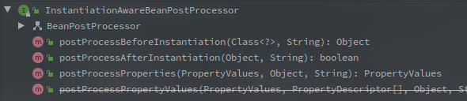
- postProcessBeforeInstantiation 方法提供了 Class 对象和 BeanName 作为参数，可以在此基础上自定义对 Bean 的实例化以及初始化
尤其注意的是，如果通过该方法创建了 Bean 对象，就不会有 InitMethod 的调用。
- postProcessAfterInstantiation 方法提供了 Bean 对象以及 BeanName 作为参数，理论上可以完成和 BeanPostProcessor 两个方法相同的功能，但是该方法的调用时机有所区别。
- postProcessProperties 和 postProcessPropertyValues 都是对于属性填充
调用场景
调用postProcessBeforeInstantiation方法可以在Spring默认的实例化方法之前，定义自己的实例化方法。
例如生成代理并替换之类的，返回的Object若不为空则可以在执行完BeanPostProcessor的后置方法之后，直接跳过实例化方法doCreateBean。
在上文resolveBeforeInstantiation方法的截图中也可以看到该方法的执行点。
postProcessAfterInstantiation方法则是在实例化之后但在属性填充之前的钩子方法，若返回false则跳过属性填充方法。
下图是doCreateBean -> populateBean方法的片段:
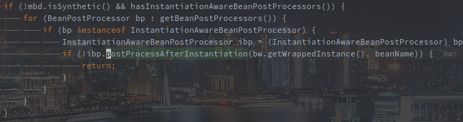
可以看到postProcessAfterInstantiation后置方法的执行逻辑以及要求，首先就需要BeanDefinition不是合成的。
postProcessProperties也是在属性被填充之前被调用，返回一个自定义的PropertyValues对象，传入当前的属性集合，实例对象以及bean名称，可以在该方法中修改属性集合。
该属性集合最终会被填充到Bean中。
下图也是doCreateBean -> populateBean方法的片段:
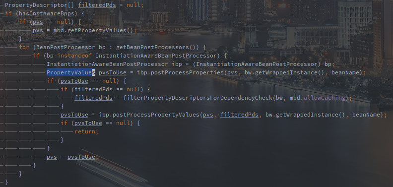
除了postProcessProperties方法，在其未生效时，postProcessPropertyValues方法也会被尝试调用。
但其实postProcessPropertyValues方法在接口中已经被声明为不推荐使用的。
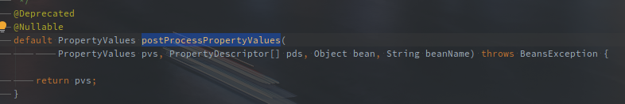
SmartInstantiationAwareBeanPostProcessor
该接口扩展了InstantiationAwareBeanPostProcessor，主要是实例化过程中获取Class对象等一些逻辑的扩展。
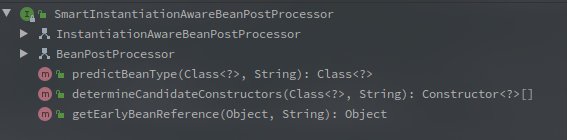
predictBeanType方法用于预测Bean的类型，明显实在实例化之前的。
这个在createBean的流程中具体的调用点未找到，不过应该是常规手段不能得到Class对象后的一种补充。
determineCandidateConstructors用于推断可用的构造函数。
以下是createBean -> doCreateBean -> createBeanInstance方法的片段：
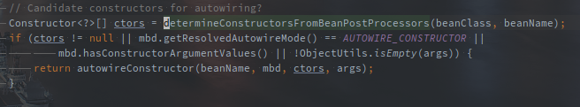
在createBeanInstance中定义了好几种实例化方法，从上到下每一步都会尝试去实例化对象，如果实例化成功就退出了。
该方法在使用autowireConstructor之前推断出合适的构造方法。
以下就是推断，也就是调用方法的逻辑：
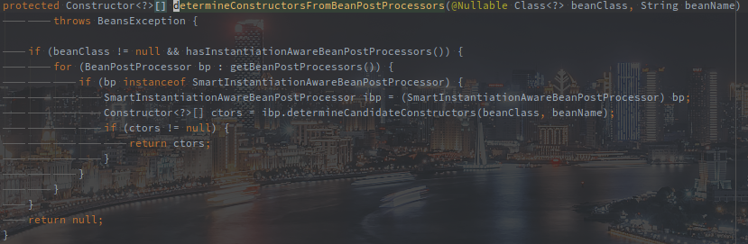
遍历调用SmartInstantiationAwareBeanPostProcessor#determineCandidateConstructors方法的时候，只要有一个成功返回，就直接返回了。
所以在BeanFactory中如果有多个SmartInstantiationAwareBeanPostProcessor作用于相同Bean的推断，就需要注意执行的顺序。
getEarlyBeanReference用于获取早期引用，处理循环依赖的情况。
实例化完成之后，还未填充属性，为了解决循环依赖问题，此时就要通过该方法暴露早期的引用。
下图实在createBean -> doCreateBean的片段：
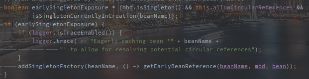
在经过是否需要暴露早期引用的判断之后，会将持有该方法的ObjectFactory作为value注册到缓存中。
具体流程表如下：
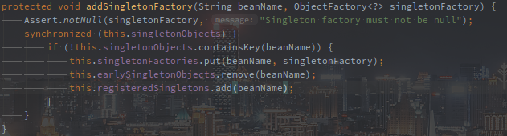
不难发现在singletonFactories缓存中注册的就是getEarlyBeanReference方法。
而getEarlyBeanReference的具体逻辑如下：
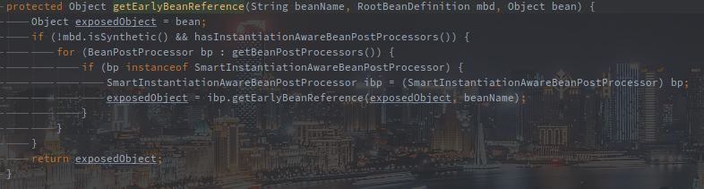
最终是循环调用了所有的SmartInstantiationAwareBeanPostProcessor#getEarlyBeanReference方法。
MergedBeanDefinitionPostProcessor
该类扩展了对MergedBeanDefinition在实例化之后的扩展。
postProcessMergedBeanDefinition在Bean实例化完成之后被调用。
下图是createBean -> doCreateBean的片段：
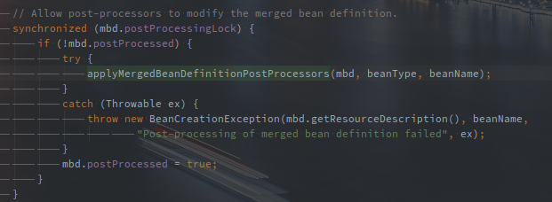
调用该方法之前，Bean已经通过createBeanInstance方法使用Spring提供的方法进行实例化。
DestructionAwareBeanPostProcessor
改接口扩展了在销毁时对Bean对应的资源的自定义回收。
在postProcessBeforeDestruction方法中可以定义对资源的自定义回收逻辑。
requiresDestruction则是判断是否需要注册上述方法。
以下是Spring Boot中Bean在创建时，doCreateBean方法的最后一步。
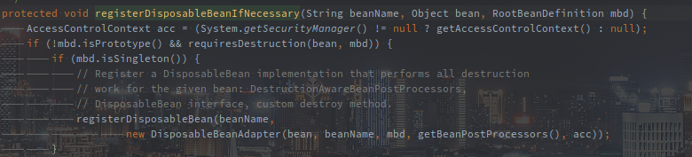
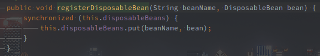
在判断为非原型模式且需要销毁时，会包装一个DiposableBeanAdapter注册到BeanFactory中。
注册的形式就是disposableBeans的缓存。
以下是DisposableBeanAdapter的构造方法中的最后一行，方法以及对应的实现。
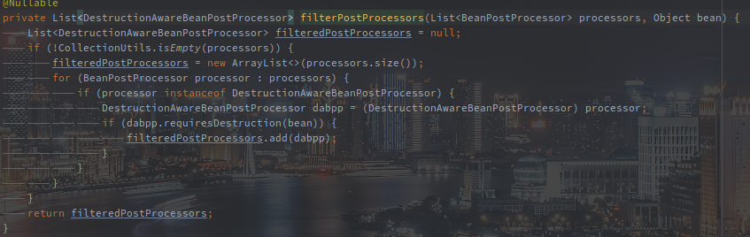
可以看到在初始化的时候通过getBeanPostProcessors()方法获取的BeanPostProcessor集合经过筛选后被赋值给DisposableBeanAdapter中的beanPostProcessors成员变量。
内置的 BeanPostProcessor
整理 Spring 汇总内置的 BeanPostProcessor，以及其作用，不做原理的深入解析。
| 类名称 | 实现方法 | 具体作用 |
|---|---|---|
| InitDestroyAnnotationBeanPostProcessor | 解析 InitializingBean 以及 DisposableBean。 | |
| CommonAnnotationBeanPostProcessor | 解析 @PostConstruct 以及 @PreDestroy，还有 @Resource | |
| AutowiredAnnotationBeanPostProcessor | 解析 @Autowired 和 @Value，附带的还有 @Inject 和 @Lookup | |
| AsyncAnnotationBeanPostProcessor | 解析 @Async 注解，内部创建 AsyncAnnotationAdvisor 类 | |
| AnnotationAwareAspectJAutoProxyCreator | 解析 @AspectJ 等 AOP 相关注解 |